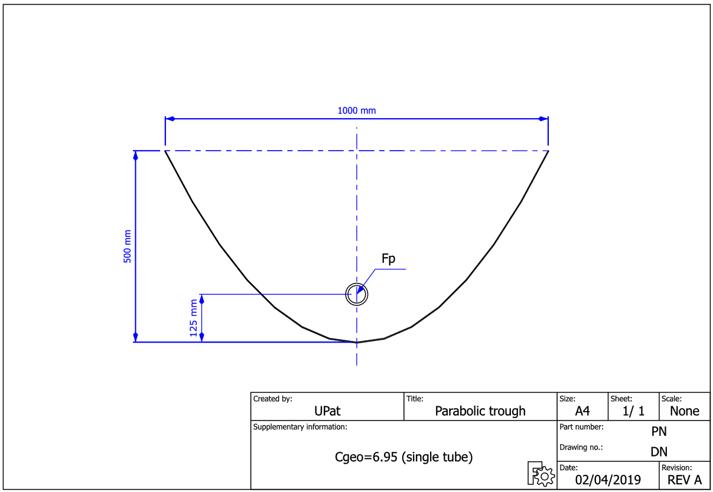
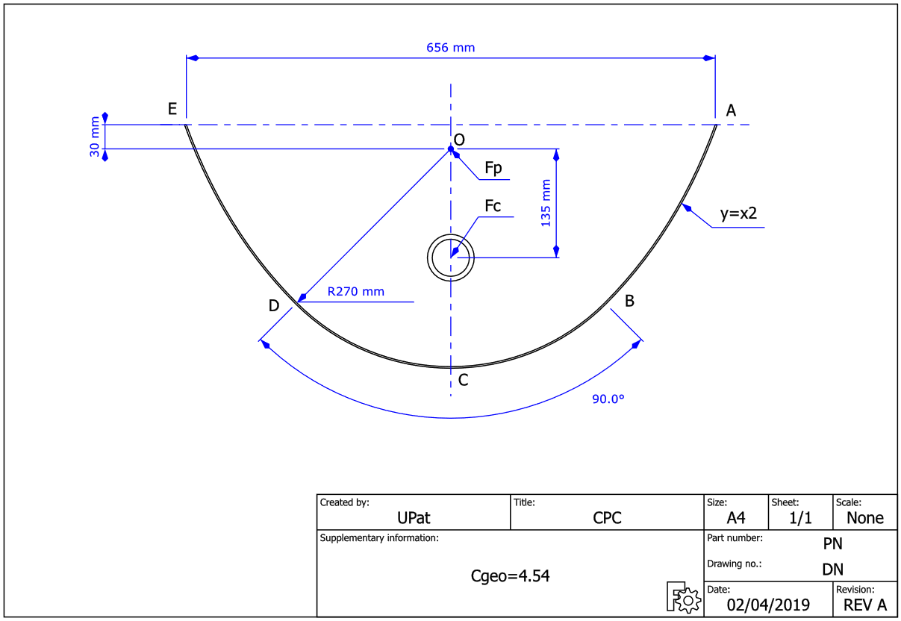
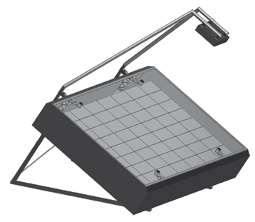

Concentrating Solar Thermal Systems
Simulation and experimental study for applications at intermediate to medium temperatures
Orestis Panagopoulos - Kontostaulakis
SCO1: parabolic

SCO1: CPC

SCO4: Micro-mirror array

$$F_a = F_p \cdot C_f - L_{total}$$
$$F_p = DNI \cdot S_m$$
$$L_{total} = ( L_s + L_m + L_a + L_r )$$
- Item 1
- Item 2
- Item 3
$$Q_u = \dot{m} C_p (T_{out} - T_{in})$$
$$Q_r = I \cdot A$$
$$n = F_R(\tau \alpha) - F_R U_L\frac{T_{in} - T_{amb}}{IA}$$
\[ \begin{split} \dot m C_p \frac{(T_{out} - T_{in})}{A} & = F'\tau \alpha K_{dir} I_{dir} + F'\tau \alpha K_{dfu} I_{dfu} - c_1 (T_m - T_{amb}) \\ & - c_2 (T_m - T_{amb})^2 - c_3 v_w (T_m - T_{amb}) - c_6 v_w I_{glb} \\ & + c_4 [\epsilon_{longwave} - \sigma_{SB} (T_{amb}+273.15)^4] - c_5 \frac{dT_m}{dt} \end{split} \]
$$T_m = \frac{T{out} + T{in}}{2}$$ $$F' \tau \alpha = \frac{n_0}{0.85K_{dir}(15 ^{\circ} ) + 0.15 K_{dfu}}$$ $$K_{dir} = K_b(\theta_l) \cdot K_b(\theta_t)$$ \begin{split} n_0 & = F' (\tau \alpha)_{rec} \cdot (\tau^2 \rho \gamma)_{con} \\ & = n_{0,rec} \cdot (\tau^2 \rho \gamma)_{con} \end{split} $$c_1 = \alpha_1 \frac{A_{rec}}{A_{con}}, c_2 = \alpha_2 \frac{A_{rec}}{A_{con}}, c_5 = m_{th} \frac{A_{rec}}{A_{con}}$$
$$\dot m C_p \frac{(T_{out} - T_{in})}{A} = F'\tau \alpha K_{dir} I_{dir} - c_1 (T_m - T_{amb}) - c_2 (T_m - T_{amb})^2 - c_5 \frac{dT_m}{dt}$$
Substituting $T_{out} = 2T_m -Tin$ and solving for $\frac{dT_m}{dt}$ we get:
$$ \frac{dT_m}{dt} = \frac{1}{c_5} [F'\tau \alpha K_{dir} I_{dir} - c_1 (T_m - T_{amb}) - c_2 (T_m - T_{amb})^2 -2 \frac{\dot m C_p}{A} (T_{m} - T_{in})]$$
System response